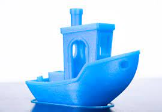

L'impression 3D ou fabrication additive regroupe les procédés de fabrication de pièces en volume par ajout de matière en couches successive depuis une modélisation 3D, par opposition à la fabrication soustractive.
Elle est utilisée dans des domaines aussi variés que le prototypage, l'industrie, l'aéronautique, la construction, l'armée, la bio-impression ou l'alimentation1,2,3,4,5.
L'impression 3D permet de réaliser un objet réel : un concepteur dessine l'objet 3D grâce à un outil de conception assistée par ordinateur (CAO).
Le fichier 3D obtenu est traité par un logiciel spécifique qui organise le découpage en tranches des différentes couches nécessaires à la réalisation de la pièce.
Le découpage est envoyé à l'imprimante 3D qui dépose ou solidifie la matière couche par couche jusqu'à obtenir la pièce finale.
Le principe reste proche de celui d'une imprimante 2D classique à cette grande différence près : c'est l'empilement des couches qui crée le volume.
Historiquement l'impression 3D commence au début des années 2000, par l'utilisation de résine chauffée et sert au prototypage rapide.
Les années 2010 voient émerger des techniques innovantes utilisant une panoplie de matériaux nouveaux : le plastique (PLA ou ABS6), la cire, le métal (aluminium, acier, titane, platine)7, le plâtre de Paris, les céramiques et même le verre8,9.
Des gains en durée et en précision de fabrication permettent la réalisation de pièces en petites séries.
Les applications de l'impression 3D sont multiples.
D'abord cantonnée au prototypage, et à la visualisation d'ergonomie pour l'architecture ou les études de design. puis à l'appareillage et à la prothèse, elle gagne peu à peu des secteurs industriels qui vont de la production de pièces de voitures10, d'avions7,11, de bâtiments12, de biens de consommation, etc.
Cependant, le prix d'une imprimante 3D performante, son utilité limitée et la maîtrise technique nécessaire à sa mise en œuvre freinent son apparition comme appareil d'usage domestique.
Petit historique

Le 16 juillet 1984, le 1er brevet sur la « fabrication additive » est déposé, par trois Français : Jean-Claude André, Olivier de Witte et Alain le Méhauté, pour le compte de la Compagnie industrielle des lasers (Cilas Alcatel)19.
Deux semaines plus tard, l’américain Chuck Hull brevète la technique de stéréolithographie (SLA pour StéréoLithographie Apparatus)20.
Ce brevet est à l'origine du nom de l’extension du fichier d’impression .stl, et de l'entreprise 3D Systems, géant de la fabrication d’imprimantes 3D.
Cette dernière lance fin 1988 la première imprimante 3D, la SLA-25021.
En 1988, Carl Deckard crée le procédé SLS (Selective Laser Sintering) à l'Université du Texas à Austin22.
En 1989 Scott Crump dépose le brevet du procédé FDM (Fused Deposition modeling) et fonde la compagnie Stratasys23,24.
En 1993, la technologie Binder Jetting est développée par le MIT et commercialisée par Z Corporation25.
en 1993, c'est aussi la création de la société Sanders Prototype.Inc, qui sera renommée Solidscape, introduisant le procédé de Material Jetting26.
En 1996, la Fraunhofer-Gesellschaft développe le procédé SLM (Selective Laser Melting)27,28.
En 2004, Adrian Bowyer crée le projet RepRap, premier projet open source d’imprimante 3D, et donne naissance à la culture maker.29.
En 2005 naît la première imprimante couleur haute définition (entreprise Z Corporation), utilisant la quadrichromie comme les imprimantes classiques, et des pigments liés par de la colle à une matière minérale30.
En 2009, les brevets FDM (Fused Deposition Modelling) expirent, ouvrant la voie à un fort développement de cette technologie31
En 2014, les brevets du SLS (Selective Laser Sintering) expirent à leur tour32.
En 2017, c'est le brevet du SLM (Selective Laser Melting) qui expire27.
Ma MK3S+
Apres avoir essayé quelques imprimantes 3d ma favorite est celle de PRUSA research
Sympas à monter
L imprimante peut être reçut en kit , à monter sois même (Prévoir 15 heures de montage) ou déja assemblé (Prévoir un cout suplêmentaire).
L'avantage de la monter soit meme, c 'est de comprendre et de démystifier son fomctionement. Vous n'aurez pas peur par la suite de la démonter et d'intervenir en cas de problême.
De plus l'assemblage de ce petit bijoux est d'une facilité déconcertante, car la
Grace à sa sonde P.I.N.D.A , finit la corvé de régler au dixieme de milimêgtre votre plateau d'impression.
En effet cette sonde prend des relevevés de hauteur du plateau, et adapte lors de l'impresson les légères différence de niveaux que l'on peu retrouver sur le plateau

 Apres avoir essayé quelques imprimantes 3d ma favorite est celle de PRUSA research
Apres avoir essayé quelques imprimantes 3d ma favorite est celle de PRUSA research